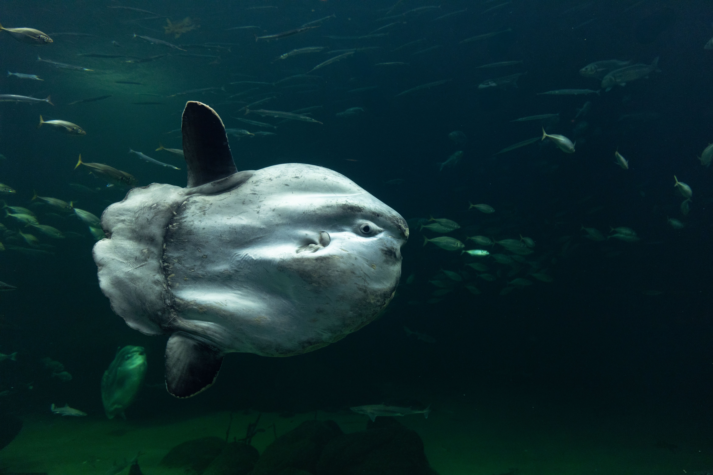

What Is an Ocean Sunfish?

Ocean Sunfish by Pexels.
Ocean sunfish, also called Mola mola, are known for their unusual round bodies and large fins. They can grow to enormous sizes, making them some of the heaviest bony fish in the world.
Where Do Sunfish Live?
Ocean sunfish live in oceans around the world, especially in temperate and tropical waters. They can swim near the surface and dive into deeper, colder water to find food.
What Do Sunfish Eat?
Sunfish eat jellyfish and other soft-bodied marine animals. They may also eat small fish and other ocean organisms depending on what is available in their habitat.